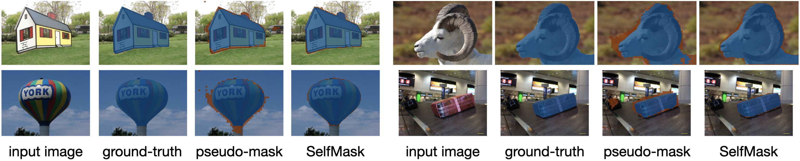
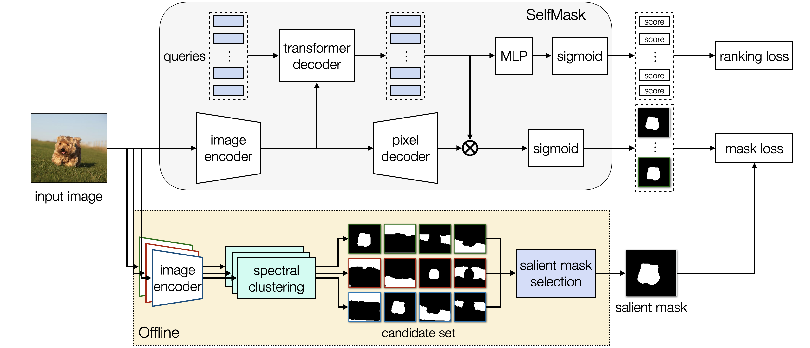
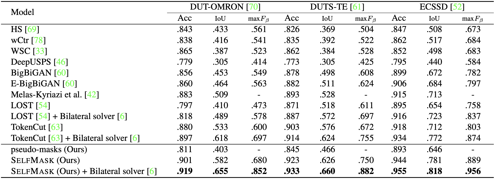
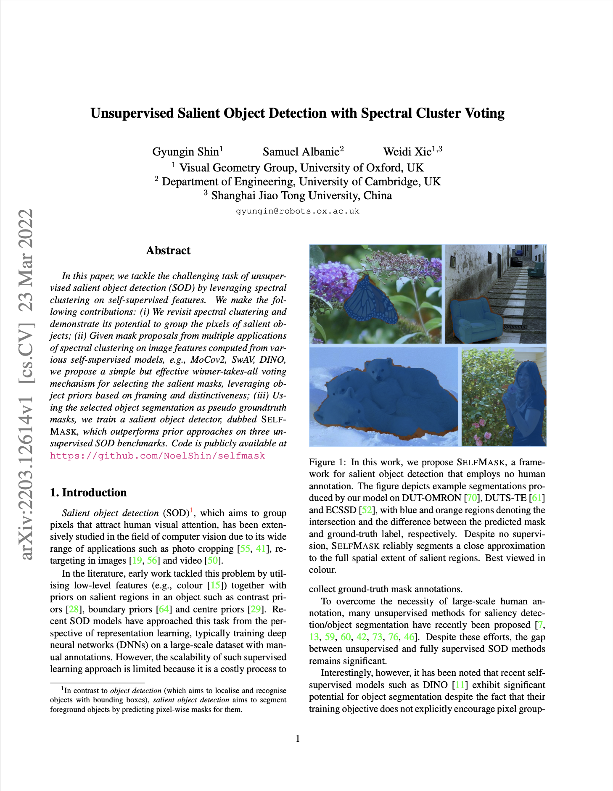

|
|
|
|
|
|
|
|  |
|
|
|
Sample visualisations of the pseudo-masks and predictions from our
model on the ECSSD, DUT-OMRON, and DUTS-TE benchmarks. From left to
right, the input image, ground-truth mask, a pseudo-mask decided by
the proposed voting-based salient mask selection, and the prediction
of our model are shown. Blue and orange coloured regions denote the
intersection and difference between a ground-truth and a predicted
mask. Best viewed in colour.
|
|
In this paper, we tackle the challenging task of unsupervised salient
object detection (SOD) by leveraging spectral clustering on
self-supervised features. We make the following contributions:
(i) We revisit spectral clustering and demonstrate its potential to
group the pixels of salient objects; (ii) Given mask proposals from
multiple applications of spectral clustering on image features
computed from various self-supervised models, e.g., MoCov2, SwAV,
DINO, we propose a simple but effective winner-takes-all voting
mechanism for selecting the salient masks, leveraging object priors
based on framing and distinctiveness; (iii) Using the selected object
segmentation as pseudo groundtruth masks, we train a salient object
detector, dubbed SelfMask, which outperforms prior approaches on three
unsupervised SOD benchmarks.
Code is publicly available at
this https URL.
|
|  |
|
|
|
Given different self-supervised encoders, we first generate a set of
pseudo-mask candidates per image using spectral clustering before the
training step. In the figure we show 12 masks from clusterings from
three different encoder features with \(k=4\). We select the most salient
mask among them via the proposed voting strategy and use it as a
pseudo-mask for the image. Then we train our model to predict \(n_q\)
queries (i.e., predictions), all of which are encouraged to be similar to the salient mask. To make the model aware of the objectness of each prediction, we use the ranking loss which encourages the objectness score of a prediction closer to the salient mask to be higher. At inference time, we select the prediction with the highest objectness score.
|
|

|
|
|
|
For all metrics, higher number indicates better results. The best
score per column is highlighted in bold. We observe that SelfMask
yields improved performance over prior state-of-the-art approaches
across all benchmarks.
|
|  | Gyungin Shin, Samuel Albanie, Weidi Xie Unsupervised Salient Object Detection with Spectral Cluster Voting CVPRW, 2022 |
Acknowledgements |